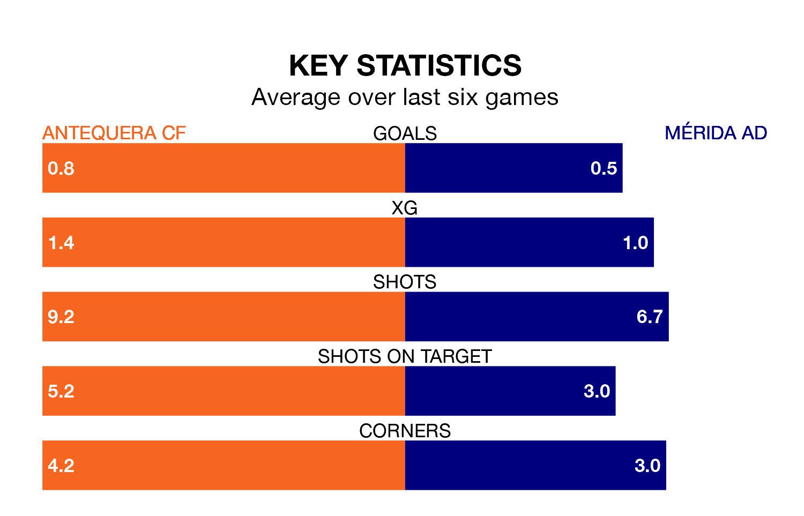

Antequera CF are heavy favourites to keep all three points at home in Sunday's late kick-off against Mérida AD.
Antequera, who sit seventh in Primera Division RFEF Group 2 with 21 games played, are priced at 1.6 to seal victory at the Estadio El Maulí.
Sitting 11 places and 14 points behind them in the table, Mérida AD are 5.3 to win with *Betting Company*, while the draw is at 3.2.
With 13 goals in 21 games so far this season, Mérida AD are scoring at below the league average rate with 0.6 goals per game. And they are conceding more than average, letting in 26 goals at a rate of 1.2 per game.
Antequera, meanwhile, are average scorers, with 1.1 goals per game. They have also conceded 1.1 goals per game.
The hosts are in mixed form in Primera Division RFEF Group 2, with two wins and a draw from their last six games.
With a win and two draws over that period, the away team's form is slightly worse – they have taken five points from 18, compared to Antequera's seven.
In the last three years, Antequera and Mérida AD have played each other on three occasions. They won one each, and they drew once.
Their last meeting was on October 7, when Antequera won 1-0 away.
Antequera's last match was on January 28, a 4-1 loss against CD Castellón.
Mérida AD drew 0-0 with Atlético Madrid B last time out, also on January 28.
Updated: 13:20 (UTC), 29/01/24